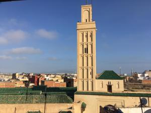
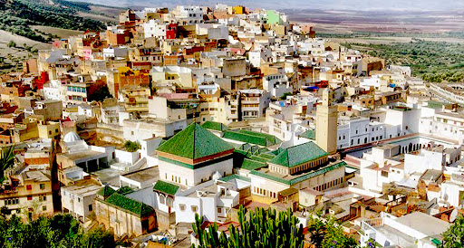
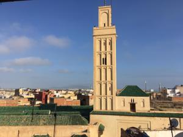
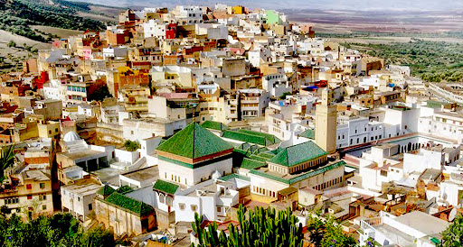

Mausolée Moulay Ismaïl : édifié par Ahmed Eddahbi, ouvert aux non musulmans. Abrite le tombeau de Moulay Ismaïl.
Mosquée Néjjarine : mosquée du xe siècle, située au centre de la médina.
La grande mosquée : fondée au xie siècle par les Almoravides ; elle compte onze portes et cent quarante-trois arcades.
Mosquée Jamaï Roua : construite en 1790 par Sidi Mohamed ben Abdellah.
Mausolée Cheikh El Kamel : édifié par Sidi Mohamed ben Abdellah, il abrite le tombeau d’El Hadi Benaïssa, fondateur de la confrérie Aïssaoua.
Musée Dar Jamaï : lieu qui témoigne de la haute bourgeoisie marocaine. À la fin du xixe siècle. Il est aménagé en musée d’arts marocains et ethnographiques depuis 1926.
Medersa Bou Inania : institut de théologie fondé par le sultan Abou Hassan Marini (1331 – 1351). Elle comporte un patio et un étage contenant vingt-six chambres de tolbas (étudiants).
Medersa Filalia : bâtiment à caractère éducatif et religieux, édifié en 1789 par Moulay Ismaïl.
Musée de la poterie rifaine.
Koubat Al Khayatine (salle des ambassadeurs) : pavillon au sein duquel le sultan Moulay Ismaïl recevait les ambassadeurs et les émissaires étrangers.
Bab El khemis : grande porte richement décorée du xviie siècle.
Bab Berdaïne : porte majestueuse édifiée par Moulay Ismaïl au xviie siècle.
Dar El Beida : palais Alaouite du xiixe siècle construit par le sultan Sidi Mohamed ben Abdellah. Aujourd'hui, il abrite l'Académie royale militaire de Meknès.
Fandouk El Hanna : complexe culturel. Propriété des Habous.
Ksar Mansour : palais et grenier. Domaine public.
Le Haras : créé en 1914 en tant qu’établissement de remonte militaire. En 1947, il devient un centre d’élevage chevalin.
Hri Souani, réservoirs, grenier et écuries : gigantesque ensemble architectural édifié par Moulay Ismaïl. Il était réservé au stockage des vivres, de l'eau et aux chevaux.
Sahrij Souani ou Bassin Agdal : grand bassin d’accumulation d’eau de 319 m de long et 149 m de large, sa profondeur dépasse les deux mètres. Il est édifié par Moulay Ismaïl pour irriguer les jardins de Meknès et il constitue une réserve d’eau pour la médina.
Habss Qara : la prison (silo souterrain) porte le nom de Qara, architecte et prisonnier portugais.
Le palais Dar El Makhzen : situé dans la commune urbaine d'El Mechouar Stinia35. Il est longé par un couloir de 2 km formé de deux impressionnantes murailles. C’était le palais officiel de Moulay Ismaïl.
Bab Mansour : est l’une des plus belles œuvres de Moulay Ismaïl. Achevée en 1732. Les proportions de cette porte sont majestueuses. Par son arche, vous arrivez aux somptueuses constructions de la ville impériale. La porte Bab Mansour est la plus imposante du Maroc voire de l’Afrique du Nord36.
Jardin Lahboul : situé en Médina dans la commune urbaine Al Ismaïlia. Il contient un zoo et un théâtre en plein air. Le jardin pourrait être exploité en matière d’animation et de loisir.
Golf royal : situé dans l’enceinte des murailles de Moulay Ismaïl, il comprend neuf trous. Il fait partie de la commune urbaine El Mechouar Stinia. Il est aménagé en parcours de golf en 1971. Le sport peut y être pratiqué en nocturne.
Site archéologique de Volubilis : la cité éclot à partir du iiie siècle av. J.-C. en tant qu'établissement punique et se développe rapidement à partir du moment où elle entre dans le giron romain, pour atteindre une superficie de plus de quarante hectares.


 


